Test cycles
A test cycle is one round of testing for a release. You choose the tests, by hand and automated together, give each one to a person, and start the testing from the cycle. The page then shows how far the round is, for the whole team and for each person, and it ends with someone approving or rejecting the release.
What it is for
Before a release, a team usually has a list: these automated tests must pass, and these checks must be done by hand. A test cycle answers "For this release, what has been tested, what is left, and who is doing it?" without a spreadsheet kept on the side.
Test managers
Plan the round, share the tests out, and see at any moment what is left and with whom.
Testers
Open the tests given to them, work through them, and see their own progress.
Release managers
See that everything was tested, then approve or reject the release in the same place.
Where to find it: in the sidebar, open Releases → Test cycles. It shows the project selected at the top of the sidebar.
The list of cycles
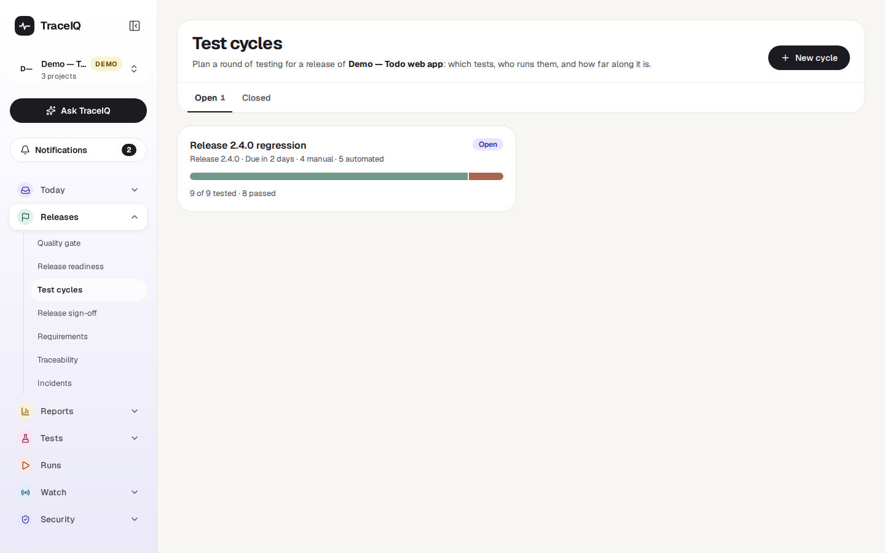
Two tabs, Open and Closed, each with a card per cycle (the newest 200). A card shows the cycle's name, its release, when it is due, how many manual and automated tests it holds, a progress bar, and a line such as "9 of 9 tested · 8 passed". The label at the top right says:
- Open testing is under way.
- Overdue the cycle is open, its due date has passed, and at least one test has not passed.
- Closed, Closed · approved or Closed · rejected for a closed cycle, with its newest sign-off if it has one.
New cycle asks for a name, and optionally the release, a due date, a suite to start with (every test in that suite and the suites inside it) and notes. Click a card to open the cycle.
A tour of one cycle
The numbers on the screenshot match the sections below. The demo's cycle is the regression round for release 2.4.0: nine tests, eight passed, one still failing.
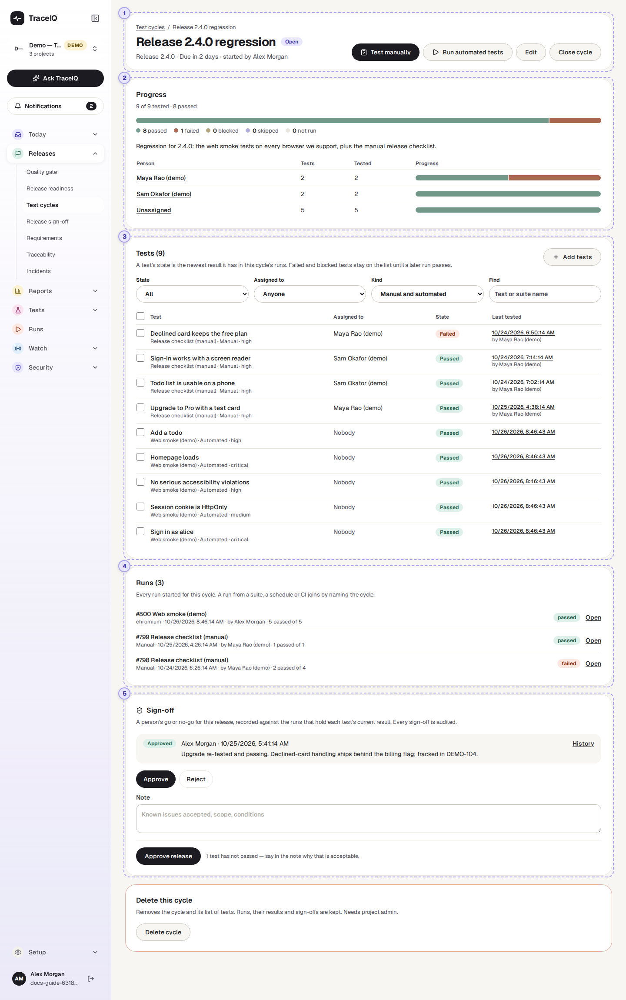
Header and buttons
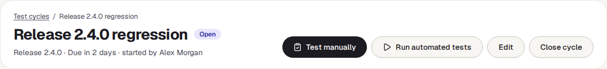
The name, the label (Open, Overdue or Closed), the release, when it is due and who started it. Editors also see these buttons:
| Button | What it does |
|---|---|
| Test manually | Opens a manual run with the steps to follow, for the manual tests of the cycle. Shown when the cycle has manual tests. |
| Run automated tests | Starts the cycle's automated tests. Shown when the cycle has automated tests. |
| Edit | Change the name, release, due date, commit and notes. |
| Close cycle / Reopen | A closed cycle can't be changed and no run can be added to it, until it is reopened. |
Progress
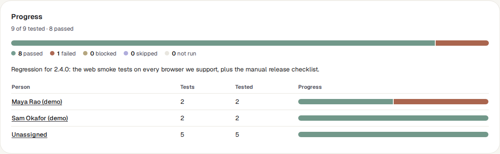
One bar for the whole cycle, with the counts written under it, then one row per person with their own bar. Each test is in exactly one of five states:
| State | Meaning |
|---|---|
| Passed | Its newest result in this cycle passed. |
| Failed | Its newest result failed. |
| Blocked | It could not be carried out: a tester marked it blocked, or an automated test stopped with an error or ran out of time. |
| Skipped | A tester chose to skip it. |
| Not run | It has no result in this cycle yet. |
"Tested" counts everything except Not run. Click a person's name to show only their tests in the list below.
Tests
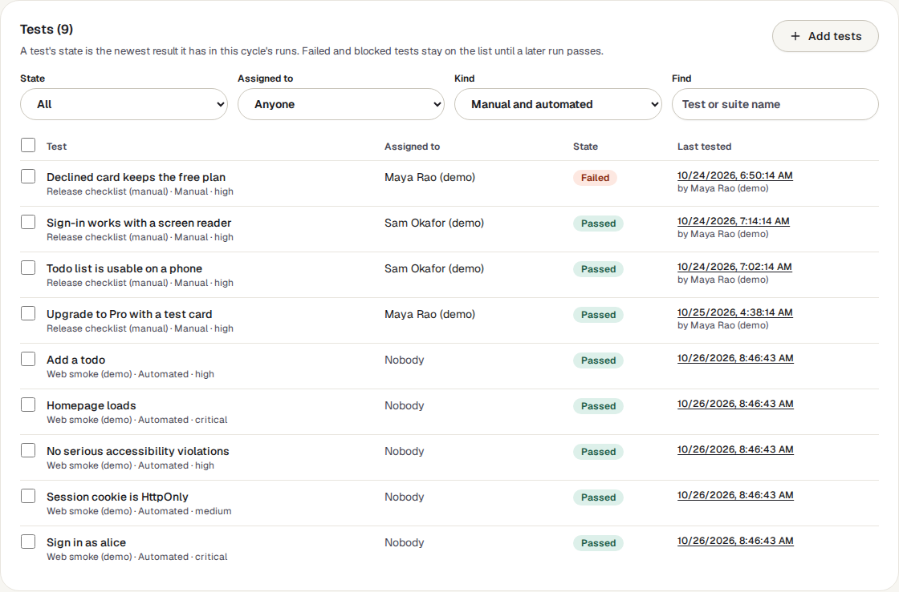
Every test in the cycle: its name, suite, whether it is manual or automated, who it is assigned to, its state, and when it was last tested (a link to that result). Four filters narrow the list: State (including Still to do, which is everything that has not passed), Assigned to (including Me and Nobody), Kind and Find.
An automated test that ran on several browsers shows the worst of them, with the note "worst of 2 browsers": a pass on one browser does not hide a failure on another.
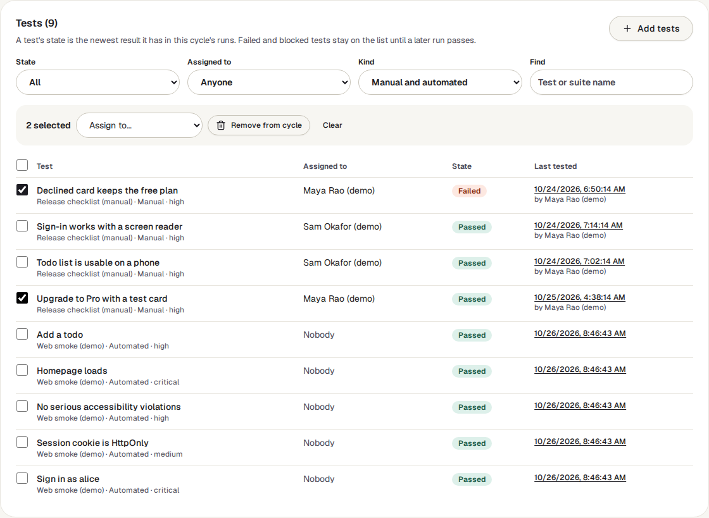
Editors can tick tests (or the box in the heading for all shown) and then Assign to… a person, or Remove from cycle. Add tests brings in a whole suite, or single tests found by name:
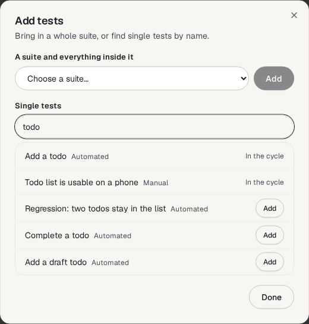
Runs
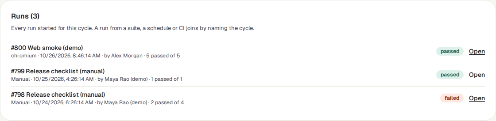
Every run made for the cycle, newest first (the newest 200): its number and suite, whether it was manual or which browser it used, when it started and who started it, its counts and its outcome. Open goes to the run; a manual run that is not finished says Continue testing.
Sign-off
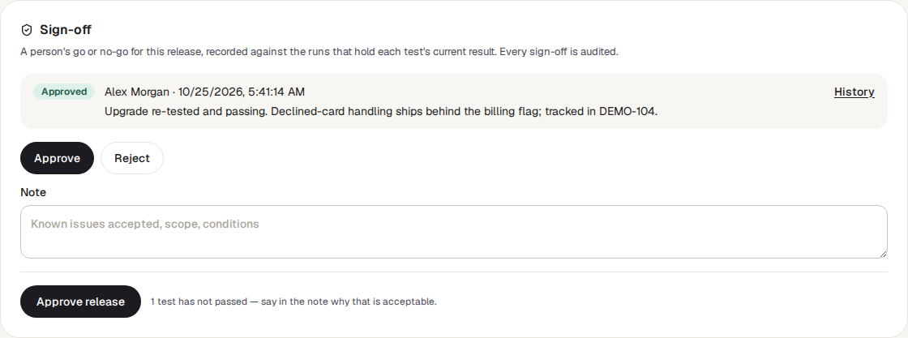
The newest go or no-go for this cycle, with who gave it, when, and their note. Editors can record a new one: choose Approve or Reject, write a note, and press the button. Next to the button the page says how many tests have not passed, so an approval with failures is a deliberate one. History opens Release sign-off, where every sign-off of the project is kept.
Watch it in use
How to…
…plan a cycle
- Press New cycle, name it, and if you like pick the release, a due date and a suite to start with.
- In the cycle, use Add tests for more suites or single tests, and Remove from cycle for the ones that don't belong.
- Tick tests and choose a person under Assign to…. Only active members who can edit tests in the project are offered.
…test by hand
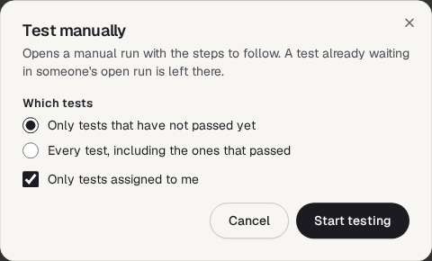
- Press Test manually. It starts with Only tests that have not passed yet and Only tests assigned to me.
- Press Start testing. The manual run opens with the steps to follow; record each test as passed, failed, blocked or skipped.
- Come back to the cycle: the states and the bars have moved.
A manual run belongs to one top-level suite, so a cycle whose manual tests sit in several suites gets one run for each; they are listed under Runs. A test that is already waiting in someone's unfinished manual run is left there, so two people are not handed the same test.
…run the automated tests
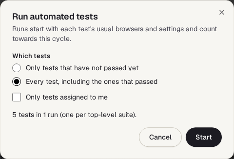
- Press Run automated tests and choose which tests. The window says how many tests and runs that makes.
- Press Start. One run starts per top-level suite, with each test's usual browsers and settings.
- The page refreshes by itself while those runs are in progress.
…count a run from your build system
A run started by a script joins a cycle when it names it. Add cycle_id to
the body of the request that starts the run (the cycle's number is the last part of its
page address):
curl -X POST "$TRACEIQ_URL/api/runs?suite_id=12" \
-H "X-API-Key: $TRACEIQ_API_KEY" -H "Content-Type: application/json" \
-d '{"cycle_id": 7, "git_commit": "'"$GIT_SHA"'"}'…finish a cycle
- Check Progress, and filter the tests by Still to do to see what is left.
- Under Sign-off, choose Approve or Reject, write the note, and press the button.
- Press Close cycle. It moves to the Closed tab with its results.
Good to know
- Only the cycle's own runs count. A test's state comes from runs started from the cycle, or started elsewhere with the cycle named. A pass in an ordinary nightly run does not tick the test off.
- The newest result wins. A later pass replaces an earlier failure, for each browser separately. A cancelled result, and a manual test nobody has recorded yet, count as nothing.
- Nothing is ticked by hand. Progress is worked out from the results each time the page opens. If a run is deleted, its results leave the cycle with it.
- What a sign-off covers. Every run that holds a current result of one of the cycle's tests, on each browser. You don't pick them. Only a person can sign, not an API key. An approval is refused while one of those runs is still in progress. If the workspace requires a separate approver, someone who started or recorded those manual runs can't sign.
- Being assigned. Open the bell (Notifications) and choose Assigned to me: cycles where you still have tests to run are listed there. No email or notification is sent when a test is assigned.
- Deleting a cycle needs the project admin role. It removes the cycle and its list of tests; the runs, their results and the sign-offs are kept.
- Deleting a test removes it from every cycle.
- Limits. 2,000 tests in a cycle, 500 cycles in a project.
- Changes are in the audit log: creating, editing, adding and removing tests, assigning, closing, reopening and deleting.
Related pages
Release sign-off
The next page in this guide: every sign-off of the project, and signing off without a cycle.
Release readiness
The ready / not-ready answer for a commit from the automated evidence.
Suites
Where manual and automated tests are written.
Runs
Each run of the cycle in full, and working on a failure together.